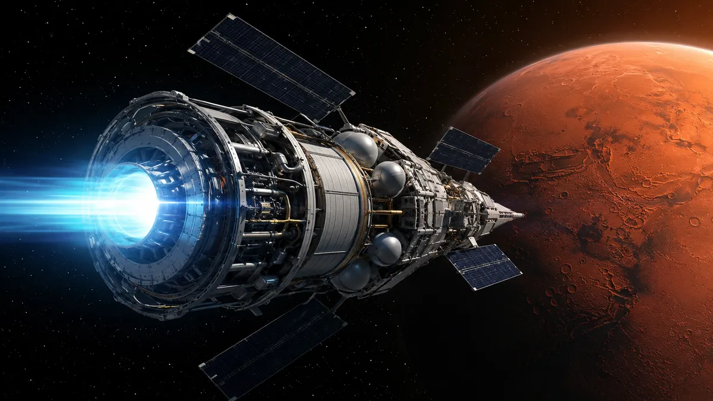

Salto para la humanidad: científicos descubren cómo viajar a Marte en 30 días
La carrera por conquistar el espacio volvió a dar un giro inesperado. Mientras distintas potencias buscan consolidar proyectos para establecer presencia humana fuera de la Tierra, científicos rusos presentaron un desarrollo tecnológico que podría modificar por completo el futuro de los viajes interplanetarios. Se trata de un nuevo motor de plasma impulsado por tecnología magnética avanzada, diseñado por la corporación estatal rusa Rosatom.

Los secretos de la Gran Pirámide salieron a la luz después de 4.600 años tras el hallazgo de estructuras capaces de resistir terremotos
Un equipo internacional de Egipto y Japón descubrió que la Gran Pirámide de Guiza tiene propiedades estructurales que dispersan las vibraciones sísmicas, explicando por qué sobrevivió a terremotos que destruyeron construcciones cercanas. Midiendo frecuencias en 40 sectores distintos, hallaron que el suelo vibra a 0,6 hercios mientras la pirámide lo hace a 2,3 hercios, lo que reduce los efectos de resonancia. Sus cámaras internas y cavidades actúan como amortiguadores que desvían las ondas sísmicas, evitando la acumulación de tensión en los bloques de piedra. También se detectaron posibles formaciones rocosas modificadas bajo la base, aunque algunos expertos advierten que podrían ser simplemente fracturas naturales de la roca caliza.

Zarpa el crucero más grande del mundo: tiene forma de tortuga marina, capacidad para 60.000 pasajeros, shoppings con piletas y 500 metros de largo
El estudio italiano Lazzarini Design presenta Pangeos, una gigantesca ciudad flotante con forma de tortuga marina que mediría más de 500 metros de largo y 615 de ancho, con capacidad para 60.000 pasajeros. La embarcación —clasificada en una nueva categoría llamada "terayate"— contaría con hoteles de lujo, shoppings, áreas verdes, canchas deportivas, piscinas y hasta un puerto interior para naves más pequeñas. En cuanto a la tecnología, funcionaría con propulsión a hidrógeno y tres motores principales, además de hidroalas para elevar parcialmente la embarcación y reducir la resistencia al avance. Por el momento sigue siendo un proyecto conceptual sin fecha confirmada de construcción, aunque el lugar elegido para desarrollarlo sería Arabia Saudita, donde habría que dragar más de un kilómetro cuadrado de mar para crear el astillero necesario.
>

La petrolera que apostó a Vaca Muerta antes que nadie vuelve a la carga con la inversión más grande de su historia en el país
Chevron presentó una solicitud bajo el RIGI para desarrollar el área de El Trapial en Neuquén, con una inversión de US$13.800 millones, la más grande de su historia en el país y la aplicación más cuantiosa bajo ese régimen hasta ahora. La compañía lleva 26 años en Argentina y más de US$10.000 millones invertidos, siendo su hito más destacado el acuerdo con YPF en 2013 para explotar Loma Campana, hoy el mayor campo no convencional del país con 100.000 barriles diarios. El anuncio fue precedido por señales claras desde la conducción global de Chevron: el CEO Mike Wirth elogió en CERAWeek los avances del gobierno de Milei en materia regulatoria, mientras el vicepresidente Mark Nelson destacó en Nueva York que Argentina "se encuentra en un punto de inflexión" para las inversiones energéticas. No obstante, Nelson también advirtió que mantener las reformas en el tiempo será esencial para convertir el impulso actual en inversiones duraderas, condicionando la continuidad del compromiso a la estabilidad regulatoria y la libre movilidad de capitales.

Un estudio matemático calculó las probabilidades exactas de la selección argentina de ganar el Mundial 2026
Un grupo de matemáticos de la UBA, encabezado por Guillermo Durán, decano de la Facultad de Ciencias Exactas, elaboró un modelo estadístico que ubica a Argentina como tercera favorita para ganar el Mundial 2026, con alrededor del 10% de probabilidades. El modelo lidera el ranking España con 14%, seguida por Inglaterra con 13%, y por detrás de Argentina aparecen Francia con 9% y Brasil con 8%. Para calcular los resultados, el sistema analiza todos los partidos disputados por las selecciones en los últimos seis años y replica la simulación unas 100.000 veces para mejorar la precisión estadística. El propio Durán advirtió que el modelo no predice un ganador con certeza, reconociendo que el fútbol tiene una imprevisibilidad inherente que ningún algoritmo puede eliminar del todo.

La conclusión de los celulares: el propietario de Microsoft reveló cuál será el dispositivo que los sustituirá
Bill Gates, cofundador de Microsoft, predice que los celulares tienen los días contados y serán reemplazados por los llamados "tatuajes electrónicos", una tecnología desarrollada por Chaotic Moon que combina sensores inteligentes con tinta especial aplicada directamente sobre la piel. Estos tatuajes no solo podrían reemplazar funciones básicas del celular como enviar mensajes o acceder a información, sino también monitorear la salud en tiempo real, almacenar datos médicos y determinar la ubicación del usuario. En paralelo, Gates también advirtió sobre el impacto negativo de los smartphones en los niños, argumentando que el uso constante de pantallas desplaza las "horas de aburrimiento" que considera cruciales para desarrollar la creatividad y el pensamiento crítico. Por eso propone reconstruir lo que llama la "infraestructura de la infancia", promoviendo espacios libres de celulares en escuelas y parques infantiles como alternativa atractiva para las nuevas generaciones.